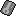

Trainer mutation glitch
0x1500 control code arbitrary code execution (Crystal) | Cart-swap arbitrary code execution | Generation I custom map script pointer | Generation I invalid meta-map scripts | Generation I item ("8F", "ws m", "-g m", "5かい", "てへ" etc.) | Generation I move ("-", "TM42") | Generation I Trainer escape glitch text boxes | Generation II bad clone | Generation II Burned Tower Silver | Japanese Crystal Pokémon Communication Center SRAM glitches | Coin Case glitch | Generation II glitch Pokédex sortings | Pikachu off-screen glitch ACE | OAM DMA hijacking | Pikachu glitch emote | Generation III glitch Pokémon summary | Generation III glitch move animation) | Remote code execution | TM/HMs outside of the TM/HM pocket | ZZAZZ glitch Trainer FC
[hr]
 No further extensions
No further extensions 
Cloning | Item duplication glitch (Generation I) | Pokémon merge glitch ("Q Glitch", Generation I) | Time Capsule exploit | Bug-Catching Contest data copy glitch (Generation II, Japan only) | Berry glitch | Battle Tower [email protected] glitch (Generation III) | (Mimic) Transform Rage glitch (Generation IV)
Transform held item glitch (Generation IV, Japan only) | Mimic glitch (Generation IV, Japan only)
[hr]
 Buffer overflow techniques
Buffer overflow techniques 
99 item stack glitch | LOL glitch | Rival LOL glitch | Instant LOL glitch | RAM LOL glitch | Out of bounds LOL glitch | blockoobLG | Instant encounter infinite chain glitch | LGFly | Super Glitch (Generation I) | Party remaining HP glitch | Super Glitch (Generation III) | Text pointer manipulation mart buffer overflow glitch | CoolTrainer♀-type move | Double distort CoolTrainer♀ corruption | Yami Shop glitch | Party Pokémon box data shift glitch | Unterminated name glitch item instant encounter (Japanese Red/Green)
[hr]
 Item stack duplication glitch (Generation I)
Item stack duplication glitch (Generation I) 
Generation I expanded items pack (Glitch Rocket HQ maps, Map FE (English and non-English European Yellow) | Map script pointer manipulation (arbitrary code execution | Map script pointer item ball manipulation) | Text pointer manipulation (arbitrary code execution | Item ball manipulation | Mart buffer overflow) | Trainerless instant encounter glitch
[hr]
 Bad clone glitch (Generation II)
Bad clone glitch (Generation II) 
????? party overloading (Type 0xD0 move glitch | ????? map corruption | Celebi trick | Celebi Egg trick | Shiny Celebi trick | Glitch move map corruption | Overloaded party map corruption | Glitch Unown (Glitch Unown map corruption) | Duplicate key items glitch (Infinite items and item creation, Expanded Balls pocket (Wrong pocket TM/HMs, Glitch Pokédex categories))
[hr]
 Closed menu Select glitches (Japanese Red/Green)
Closed menu Select glitches (Japanese Red/Green) 
Dokokashira door glitch (International) | Fossil conversion glitch (international) | Second type glitch | Skip to Level 100 glitch | Trainer mutation glitch | Walk through walls (International) | Lift glitch | Badge describer glitch
[hr]
 Pomeg glitch (Generation III)
Pomeg glitch (Generation III) 
Pomeg data corruption glitch ("Glitzer Popping") | Charm glitch
[hr]
 Voiding (Generation IV)
Voiding (Generation IV) 
Broken escalator glitch (Japan only) | Elite Four door glitch (Japan only)
[hr]
 2x2 block encounter glitches (Generation I)
2x2 block encounter glitches (Generation I) 
Left-facing shore tile glitch (in-game trade shore encounter trick, Old man trick, Trade link up shore encounter trick, Fight Safari Zone Pokémon trick) | Viridian Forest no encounter grass tiles glitch
[hr] Glitch City
Safari Zone exit glitch | RAM manipulation | Out of bounds Glitch City (Generation II) | Slowpoke Well out of bounds corruption (French Gold/Silver/Crystal)
[hr]
 Large storage box byte shift glitch
Large storage box byte shift glitch 
Storage box remaining HP glitch | Generation I max stat trick
[hr]
 Pikachu off-screen glitch
Pikachu off-screen glitch 
[hr]  SRAM glitches
Generation I save corruption | 255 Pokémon glitch | Expanded party encounter table manipulation (Generation I) | Send party Pokémon to a new game (Generation I) | Generation II save corruption | Mailbox glitches | Mystery Gift item corruption | Trainer House glitches
Death-warp | Ditto trick | Experience underflow glitch | Mew trick | Text box ID matching | Meta-map script activation
[hr]
 Walk through walls
Walk through walls 
Ledge method | Museum guy method | Rival's effect | Select glitch method (International Select glitch method), Brock Through Walls
[hr] Surf down glitch
Grass/rock Surfing glitch (Spanish/Italian only) (adaptions: Submerge glitch (international)) | 8 8 (0x7C) grass/rock surfing glitch (English Red/Blue))
Battle disabling Select glitch | Badge describer glitch | Dokokashira door glitch | Fossil conversion glitch | Item creation glitch | Lift glitch | Partial switch glitch (Red/Green v1.0 only) | Remaining PP into species Select glitch | Second type glitch | Skip to Level 100 glitch | Trainer mutation glitch | Walk through walls | Warp by Nidoran♂ glitch
Please note that this glitch only exists in the Japanese versions of the game, or is otherwise a glitch |
Trainer mutation glitch is a closed menu Select glitch in Pokémon Red, Green, and Pokémon Blue (Japanese).
It allows the player to change what groups of Trainers in a map say, how they turn, and what class they are. If the new 'class' is less than 200 (C8), then they will turn into Pokémon. The player can also change the Pokémon's levels.
Unfortunately the player can't manipulate the species/class of the first Trainer IDs 1-4 in a map unless they have a Pokémon with specific stat experiences (so no 'fresh' Pokémon) but they should be able to manipulate others.
Basic steps
1) Press Select on the 20th item.
2) Exit and go into battle, then swap the 20th Pokémon with a Pokémon of your choice.
3) Without using a warp, go to a Trainer and they should have 'mutated'. Do note that a Trainer's text may freeze the game, and beware of Missingno. in Red/Green.
The game may freeze after the switch with no documented fix.
Technical details
Every Trainer on a map has an ID. This glitch lets you change the Pokémon (or Trainer) and level that a certain Trainer ID is. The ID can be tracked with memory viewer by talking to a Trainer and viewing address CC55, CD4F, or CF0E. As maps have multiple Trainers (and IDs), you can mutate more than one Trainer.
When you switch the Pokémon, you're actually switching the 20th Pokémon with the first. This puts various Pokémon data into unrelated data, and one group causes the Trainer mutation effects.
| Original Address | Original Address 1 data | Destination Address | Destination Address data |
|---|---|---|---|
| N/A | N/A | D463 | Trainer 01 turning data |
| N/A | N/A | D464 | Trainer 01 text |
| N/A | N/A | D465 | Trainer 02 turning data |
| N/A | N/A | D466 | Trainer 02 text |
| N/A | N/A | D467 | Trainer 03 turning data |
| N/A | N/A | D468 | Trainer 03 text |
| N/A | N/A | D469 | Trainer 04 turning data |
| N/A | N/A | D46A | Trainer 04 text |
| N/A | N/A | D46B | Trainer 05 turning data |
| N/A | N/A | D46C | Trainer 05 text |
| N/A | N/A | D46D | Trainer 06 turning data |
| N/A | N/A | D46E | Trainer 06 text |
| D12B | Species byte 2 | D46F | Trainer 07 turning data |
| D12C | Current HP byte 1 | D470 | Trainer 07 text |
| D12D | Current HP byte 2 | D471 | Trainer 08 turning data |
| D12E | Level (possibly) | D472 | Trainer 08 text |
| D12F | Status ailment | D473 | Trainer 09 turning data |
| D130 | Type 1 | D474 | Trainer 09 text |
| D131 | Type 2 | D475 | Trainer 10 turning data |
| D132 | Catch rate | D476 | Trainer 10 text |
| D13F | Attack experience byte 2 | D483 | Pokémon 1 species |
| D140 | Defense experience byte 1 | D484 | Pokémon 1 level |
| D141 | Defense experience byte 2 | D485 | Pokémon 2 species |
| D142 | Speed experience byte 1 | D486 | Pokémon 2 level |
| D143 | Speed experience byte 2 | D487 | Pokémon 3 species |
| D144 | Special experience byte 1 | D488 | Pokémon 3 level |
| D145 | Special experience byte 2 | D489 | Pokémon 4 species |
| D146 | Attack & Defense DV | D48A | Pokémon 4 level |
| D147 | Speed & Special DV | D48B | Pokémon 5 species |
| D148 | PP of move 1 | D48C | Pokémon 5 level |
| D149 | PP of move 2 | D48D | Pokémon 6 species |
| D14A | PP of move 3 | D48E | Pokémon 6 level |
| D14B | PP of move 4 | D48F | Pokémon 7 species |
| D14C | Pokémon level | D490 | Pokémon 7 level |
| D14D | Max HP byte 1 | D491 | Pokémon 8 species |
| D14E | Max HP byte 2 | D492 | Pokémon 8 level |
| D14F | Attack byte 1 | D493 (unconfirmed) | Pokémon 9 species |
| D150 | Attack byte 2 | D494 (unconfirmed) | Pokémon 9 level |
| D151 | Defense byte 1 | D495 | Pokémon 10 species |
| D152 | Defense byte 2 | D496 | Pokémon 10 level |
Example
Let's say you want specific Pokémon for Trainer IDs 02 through to 07 as such.
ID 02: Level 1 Mew ID 03: Level 254 Mewtwo ID 04: Level 5 Articuno ID 05: Level 5 Zapdos ID 06: Level 5 Moltres ID 07: Level 100 Porygon
This would require the following data from address D141:
15 01 83 FE 4A 05 4B 05 49 05 AA 64
And that is:
- Defense experience is 21 modulo 256.
- Speed experience is exactly 387.
- Special experience is 65098.
- Defense DV is 5, Attack DV is 0.
- Speed DV is 11, Attack DV is 4.
- Move 1 PP is 5.
- Move 2 PP is 73.
- Move 3 PP is 5.
- Move 4 PP is 42 w/2(?) PP Ups used.
- Pokémon is level 100.
Those requirements are totally unviable for non-cheat play, so it's a proof of concept, but you can get cool results with random Pokémon.
YouTube video
| |
| This article or section is a stub. You can help Glitch City Wiki wiki by expanding it. |